No estudo das áreas de polígonos, uma sugestão é explorar os espaços da escola para o cálculo das áreas. Os alunos podem estimar as medidas e, em seguida, utilizando uma trena ou um metro de carpinteiro, calcular a área desses espaços.
Pode-se construir uma tabela com o valor estimado e com a medida real. Combine com os alunos previamente os espaços que serão medidos, como, por exemplo, a sala de aula e uma quadra esportiva. Para realizar a atividade, pode-se utilizar a calculadora.
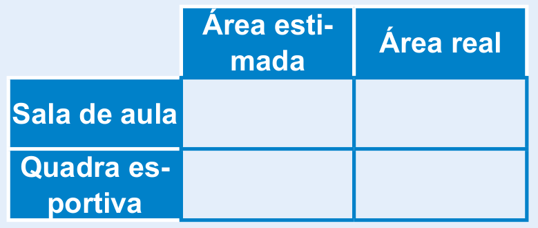Após a conclusão do trabalho, solicite aos alunos que tragam para a aula alguns panfletos de plantas baixas para que possam fazer o cálculo das áreas internas dos cômodos, lembrando que essas plantas devem conter as medidas. Ao fim da página, apresentamos uma planta baixa que pode ser utilizada em sala de aula para esta atividade.
Área do quadrado
Atividade 1
Verifique com os alunos como eles fariam para calcular a área. Uma possibilidade é verificar quantos quadrados de 1 m² cabem na região ocupada pela horta. Outra possibilidade seria multiplicar a medida da largura pela medida do comprimento, observando que ambas as medidas são iguais por se tratar de uma região quadrada.
CAPÍTULO 3 - Área de alguns polígonos
Área do quadrado
Na casa de Júlia há um quintal, no qual ela fará uma horta quadrada com 5 metros de lado conforme mostra a ilustração ao lado.
Qual será a área ocupada por essa horta?
1. Troque ideias com um colega e expliquem como vocês fariam para calcular a área da região ocupada pela horta.

Agora, vejamos o cálculo da área dessa região quadrada.
Vamos representar a horta por meio de um desenho indicando as suas medidas.
Por meio do desenho, podemos perceber que em um quadrado de 5 m de lado cabem 25 quadradinhos de 1 m². Logo, sua área é igual a 25 m².
Para calcularmos a área de um quadrado basta multiplicarmos a medida de seus lados.
A = 5 ∙ 5 = 25 m²
Para calcularmos a área de um quadrado basta multiplicarmos as medidas dos seus lados ( ℓ ).
A = ℓ ∙ ℓ = ℓ2
259
Área do retângulo
Antes de explorar a situação apresentada no livro, retome o uso do geoplano e proponha aos alunos que, usando os elásticos, construam diversos retângulos com os lados de medidas diferentes. Em seguida, faça explorações com eles:
- Podemos ter retângulos com os lados de medidas diferentes e que apresentem a mesma área?
Anote no quadro as medidas dos lados que foram usados pelos alunos para construir no geoplano, calcule com eles as áreas que cada um deles possui e a seguir faça as comparações necessárias. Estes retângulos construídos apresentam a mesma área? Os retângulos que possuem a mesma área têm também o mesmo perímetro?
Converse com os alunos a respeito da importância da representação gráfica para indicar os dados que são dados no problema.
Área do retângulo
Reinaldo Rosa/Acervo da Editora
Um terreno retangular que está à venda tem 12 m de frente por 18 m de fundo. Sabendo-se que o metro quadrado custa R$ 650,00, qual o valor desse terreno?
1. Troque ideias com um colega e expliquem como vocês fariam para
calcular o valor desse terreno.
Como o metro quadrado custa R$ 650,00, primeiramente precisamos
saber quantos metros quadrados tem o terreno. Uma forma de
calcular a área é multiplicando a medida da largura pela medida
do comprimento do terreno. Após esse cálculo, multiplica-se o
valor do metro quadrado pela área total.
Agora, vejamos o cálculo da área dessa região retangular.
Vamos representar esse terreno por meio de um desenho e indicar as suas medidas para calcular a sua área.
Note que em sua superfície cabem 216 quadradinhos de 1 m de lado. Logo sua área é igual a 216 m2.
Também podemos calcular a área de uma região retangular multiplicando as medidas dos seus lados.
A = 18 ∙ 12 = 216 m²
Agora que sabemos a área do terreno, podemos calcular o seu valor.
Valor total: 216 ∙ 650 = 140 400
Portanto, esse terreno custa R$ 140.400,00.
Em um retângulo, chamaremos as medidas dos seus lados de base (b) e altura (h). Para calcularmos a área de um retângulo, multiplicamos a medida da base pela medida da altura.
A = b ∙ h
260
Área do paralelogramo
Solicite aos alunos que desenhem, em uma folha de papel, um paralelogramo qualquer.
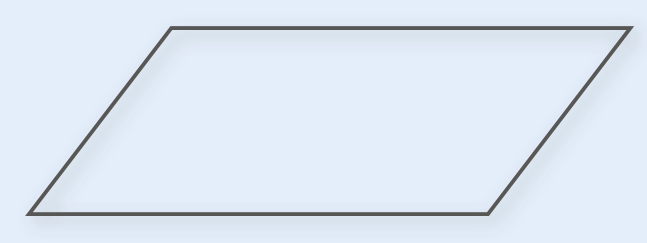Em seguida, devem traçar a altura deste paralelogramo a partir do vértice superior ao lado esquerdo.
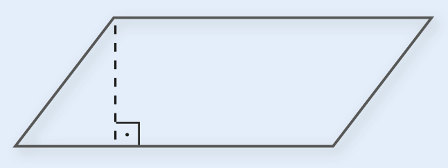Converse com eles sobre o significado de traçar este segmento. Lembrando que a altura é perpendicular aos lados opostos paralelos.
Eles deverão recortar o triângulo formado ao lado esquerdo e completar o lado direito, formando um retângulo, colando-o no caderno.
Os alunos deverão perceber que a área do paralelogramo é a mesma da área do retângulo, sendo que a forma de calcular a sua medida é a mesma.
Área do paralelogramo
Utilizando o conceito de área de um retângulo que acabamos de estudar, vamos verificar como calcular a área de um paralelogramo.
Observe as figuras a seguir.
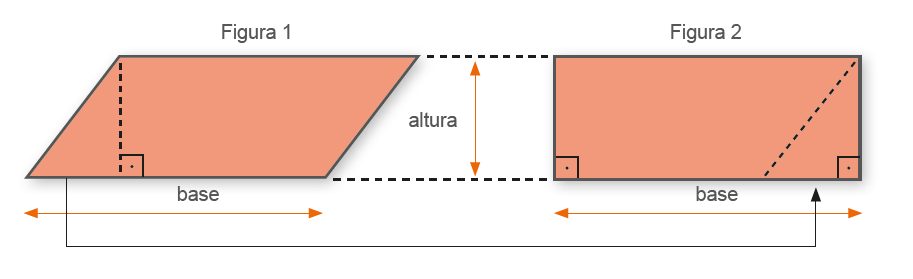Na figura 1 temos representado um paralelogramo. Note que podemos transformar esse paralelogramo em um retângulo recortando o triângulo e en-caixando-o na outra extremidade do paralelogramo. Ao transformarmos a figura 1 na figura 2 a área inicial não se altera. Por isso, para calcularmos a área de um paralelogramo, utilizamos o mesmo raciocínio do cálculo da área do retângulo. Conhecendo-se a medida da base e a medida da altura do paralelogramo é possível calcular a sua área.
Observe o cálculo da área do paralelogramo a seguir.
A = 6,2 ∙ 3,1 = 19,22 cm²
Para calcularmos a área de um paralelogramo multiplicamos a medida da base pela medida da altura.
A = b ∙ h
261
Área do triângulo
Solicite aos alunos que desenhem, em uma folha de papel, um retângulo com medidas quaisquer.
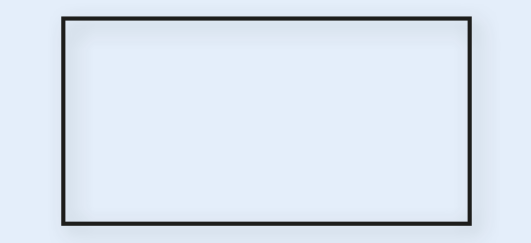Em seguida, peça que tracem uma das diagonais unindo os vértices opostos.
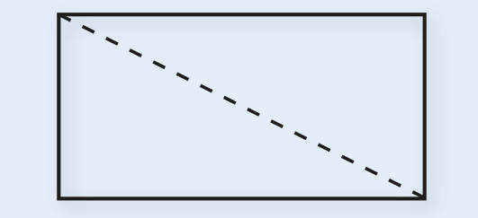Eles deverão recortar o retângulo transformando-o em 2 triângulos retângulos. Após recortarem, peça que sobreponham os triângulos para comparar as áreas. Eles deverão perceber que os dois triângulos apresentam a mesma área. Logo, a área de um triângulo corresponde a metade da área de um retângulo.
Área do triângulo
Utilizando os conceitos de área do retângulo e do paralelogramo, estuda-remos agora como calcular a área de um triângulo.
Observe as figuras a seguir:
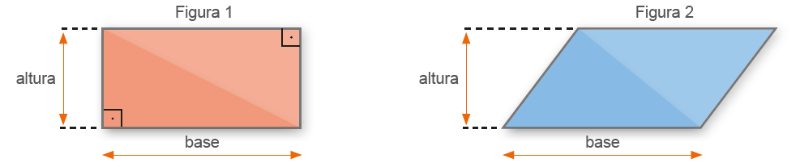Na figura 1 temos um retângulo que foi dividido em dois triângulos retângulos congruentes.
Na figura 2 temos um paralelogramo que foi dividido em dois triângulos congruentes.
Note que em ambos os casos a área dos triângulos corresponde à metade da área dos polígonos dados.
Dessa forma, conhecendo-se a medida da base e da altura de um triângulo, é possível calcularmos a sua área. Vejamos um exemplo.
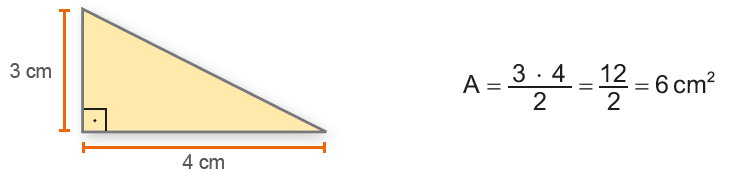Atenção!
A área de um triângulo corresponde à metade da área de um paralelogramo.
![Três triângulos. O primeiro é um triângulo retângulo e amarelo. Uma linha na vertical à esquerda com a letra h e outra linha na base com a letra b, demonstram que a base é maior que a altura. O segundo é um triângulo ocutângulo laranja. No centro dele, do vértice à base, uma linha tracejada com a letra h ao lado. Na base dele, a letra b. O terceiro é um triângulo obtusângulo azul. O vértice está virado para baixo e o ângulo da parte de cima é maior que a base indicada abaixo do triângulo com a letra b. À direita do triângulo, uma linha tracejada com a letra h.](../../resources/images/trifd.PNG)
262
Atividade 3
Após a realização desta atividade, sobre o cálculo da área dos cômodos de um apartamento, proponha aos alunos que façam o desenho de uma planta de uma casa/apartamento ou cômodos da escola e, usando uma trena, meçam as suas dimensões. Em seguida, devem calcular a área de cada um deles.
ENCONTRE SOLUÇÕES
1. Em seu caderno, calcule a área dos polígonos a seguir.
a)
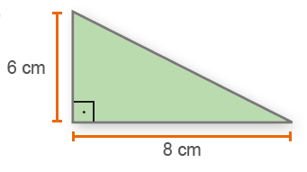A = (b ∙ h)/2 = (8 ∙ 6)/2 = 48/2 = 24cm²
b)
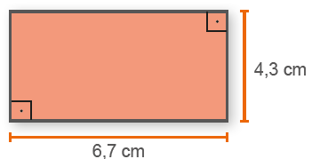A= b ∙ h = 5,4 ∙ 2,8 = 15,12 cm²
c)
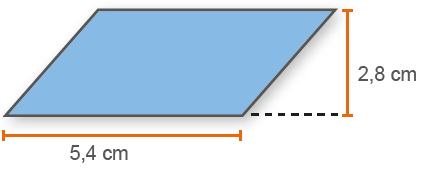A= b ∙ h = 6,7 ∙ 4,3 = 28,81 cm²
d)
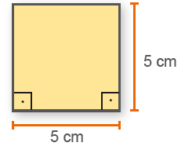A = 5² = 25cm²
√
2. Um quadrado tem área igual a 196 cm². Qual a medida do lado desse
quadrado?
Para descobrirmos a medida do lado, devemos realizar a operação
inversa da potenciação, no caso a radiciação.
√ 196 = 14 . O lado do quadrado mede 14 cm.
3. Observe a planta do apartamento abaixo.
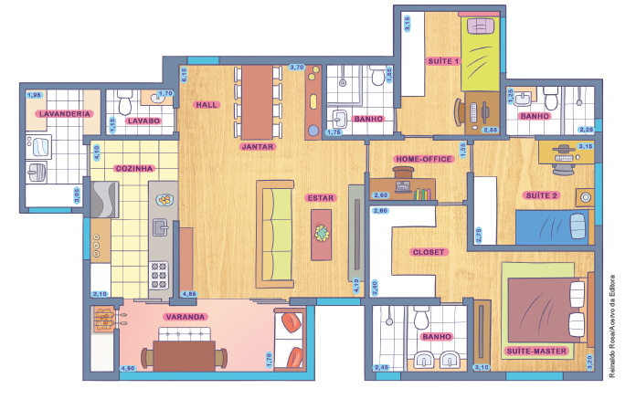Reinaldo Rosa/Acervo da Editora
► Em todos os cômodos as medidas estão indicadas em metros. Em seu caderno, determine a área dos seguintes cômodos:
a) cozinha; A = 4,10 ∙ 2,10 = 8,61 m²
b) home-office; A = 2,60 ∙ 1,55 = 4,03 m²
c) suíte 1; A = 3,15 ∙ 2,55 = 8,0325 m²
d) lavabo; A = 1,15 ∙ 1,70 = 1,955 m²
e) closet; A = 2,60 ∙ 2,40 = 6,24 m²
f) suíte máster. A = 3,10 ∙ 3,20 = 9,92 m²
263
4. Observe a medida dos lados de alguns revestimentos para paredes.
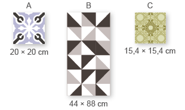► Em seu caderno, determine a área de cada revestimento. A: A = 20 = 400 cm²
B: A = 44 ∙ 88 = 3 872 cm².
C: A = 15,42 = 237,16 cm².
5. No caderno, calcule a área da região colorida. A = 10,5 ∙ 6,4 − 3 = 67,2 − 9 = 58,2 cm²
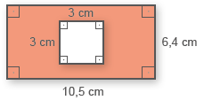
6. Marcela quer pintar uma parede de seu apartamento que mede 5,7 m
por 3 m. Sabendo que o pintor cobra R$ 9,30 por metro quadrado
pintado, quanto Marcela irá gastar contratando esse pintor?
A = 5,7 ∙ 3 = 17,1 m²
Valor: 9,3 ∙ 17,1 = 159,03.
Marcela gastará R$ 159,03.
7. Com o auxílio de uma régua, meça a medida dos lados dos quadrados
a seguir. Medida dos lados − A: 3 cm; B: 1,5 cm.
Perímetro − A: 12 cm, B: 6 cm.
Área − A: 9 cm²; B: 2,25 cm².
► Agora, oralmente, verifique quais das sentenças são verdadeiras.
a) A medida do lado do quadrado A é o dobro da medida do lado do quadrado B. Verdadeira
b) O perímetro do quadrado B é igual a metade da medida do perímetro do quadrado A. Verdadeira
c) A área do quadrado A é o dobro da área do quadrado B. Falsa
8. Na malha quadrangular a seguir temos desenhados dois quadrados. Observe esses dois polígonos e depois responda às questões em seu caderno.
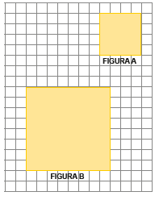a) Podemos afirmar que a figura B é uma ampliação da figura A? Sim, pois todos os seus comprimentos foram multiplicados por 2.
b) Considerando o lado de cada quadradinho como uma unidade de medida de comprimento (u.c.), quanto mede o lado de cada quadrado? Figura A: 4 u.c.; Figura B: 8 u.c.
c) Qual o perímetro de cada quadrado? Figura A: 16 u.c.; Figura B: 32 u.c.
d) Qual a área de cada quadrado? Figura A: 16 u.a.; Figura B: 64 u.a.
e) Organize as medidas que você encontrou em uma tabela, conforme modelo abaixo.
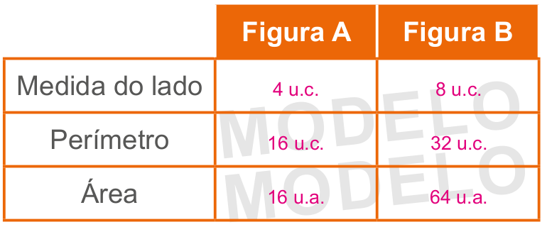► Comparando as medidas encontradas para as medidas dos lados, dos perímetros e das áreas, o que podemos observar? Ao multiplicarmos a medida dos lados por 2, o perímetro também é multiplicado por 2. O mesmo não ocorre com a área.
264
Atividade 10
Nesta atividade, converse com os alunos sobre a importân- cia de observar o comprimento das paredes e fazer as compara- ções de medidas entre os cômo- dos. Observando a planta, uma parede maior não pode ter uma medida menor que a parede de outro aposento. Os alunos podem fazer experimentos, medindo com uma trena o comprimento das pa- redes de algumas partes do apar- tamento para verificarem possí- veis medidas que façam sentido para os cômodos representados na planta.
Atividade 11
Esta atividade pode ser feita em duplas ou grupos na própria escola, escolhendo alguns cô- modos da instituição sob a orien- tação do professor.
Atividade 12
O paralelogramo corresponde a 1/8 da área total do Tangram.
Área do paralelogramo:
1/8 corresponde a 64 : 8 = 8 cm2.
O triângulo pequeno corresponde a 1/16 da área total do Tangram.
Área do triângulo: 1/16 de 64 corresponde a 64 : 16 = 4 cm².
Área sombreada: 8 + 4 = 12 cm2.
Atividade 13
A área da região cinza é igual à metade da área do retân- gulo ABCD menos a área do re- tângulo cujos lados medem 2 cm e 6 cm.
A = (14 ∙ 8)/2 - 6 ∙ 2 = 56 -14 = 44 cm²
9. Na malha quadrangular a seguir, a figura II é uma redução da figura I.
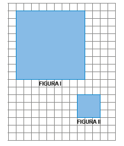a) Em seu caderno, copie a tabela abaixo e complete com as medidas que estão sendo solicitadas, considerando cada lado do quadradinho como uma unidade de medida de comprimento.
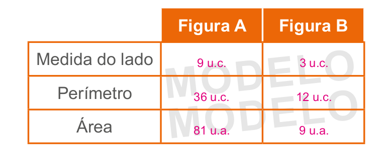b) Comparando as medidas encontradas dos lados, dos perímetros e das áreas, o que podemos observar? Ao dividirmos a medida dos lados por 3, o perímetro também é dividido por 3. O mesmo não ocorre com a área.
10. A seguir temos uma planta baixa de um apartamento. Observe:
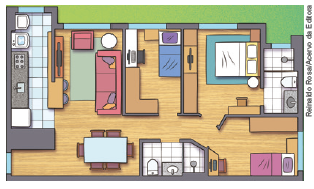a) Troque ideias com seu colega e descrevam, em seus cadernos, quais são os cômodos que compõem o apartamento. O apartamento é composto por: 3 dormitórios, sendo 1 suíte, 1 sala com 2 ambientes, cozinha com lavanderia e 1 banheiro.
b) Usando uma folha de papel quadriculado, desenhem a planta baixa desse apartamento e façam sugestões de possíveis medidas para as regiões internas do apartamento. Lembrem-se que as medidas devem respeitar a proporcionalidade entre os cômodos. Resposta pessoal.
11. Usando uma folha de papel quadriculado, observe a casa em que você mora e desenhe uma planta baixa, indicando os cômodos que a compõem. Com o auxílio de uma trena, indique as medidas aproximadas das paredes de cada um dos aposentos. Resposta pessoal.
12. (OBM) A figura a seguir representa um Tangram, quebra-cabeças chinês formado por 5 triângulos, 1 paralelogramo e 1 quadrado. Sabendo que a área do Tangram a seguir é 64 cm2, qual é a área, em cm2, da região sombreada?

a) 7,6
b) 8
c) 10,6
d) 12
e) 21,3
13. (OBMEP) A figura é formada por dois quadrados, um de lado 8 cm e outro de lado 6 cm. Qual é a área da região cinza?
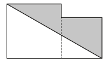a) 44 m²
b) 46 cm²
c) 48 cm²
d) 50 cm²
e) 56 cm²
265